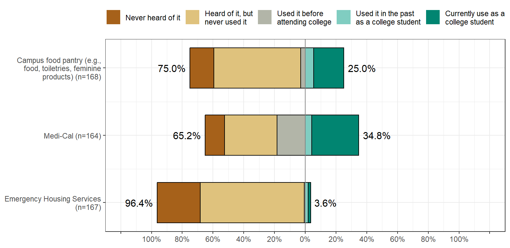
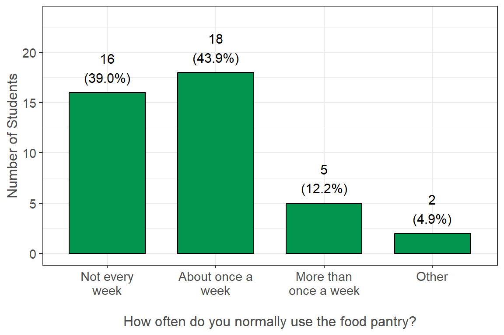
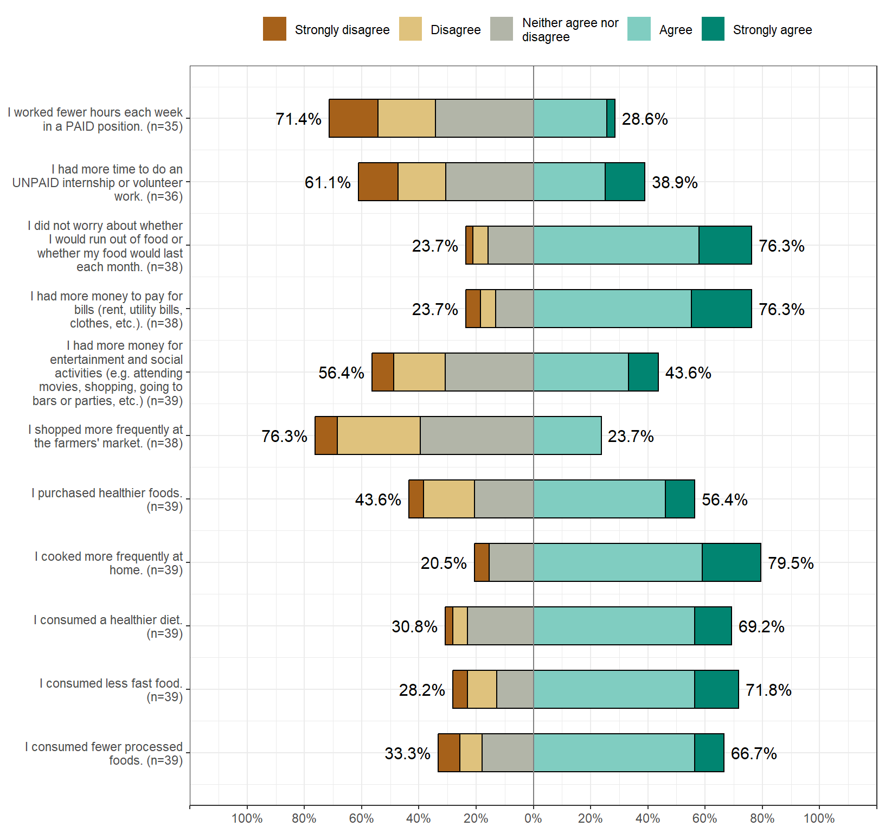
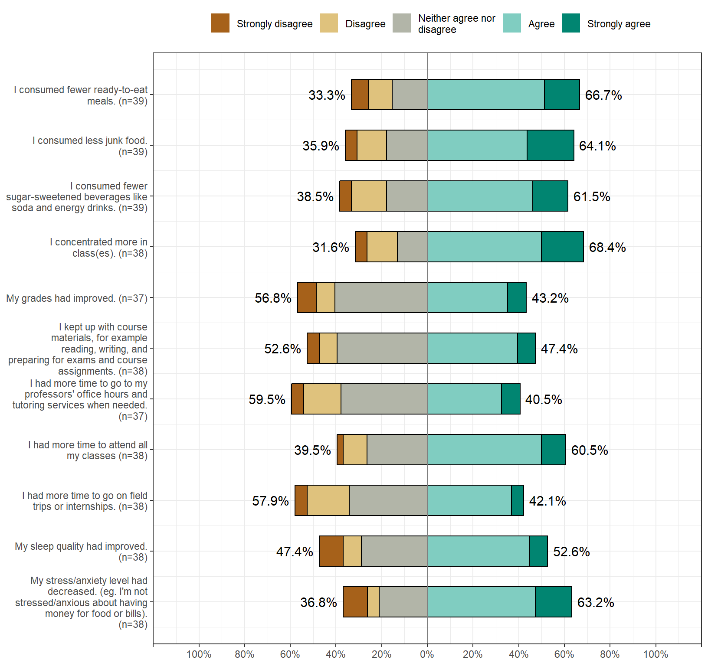
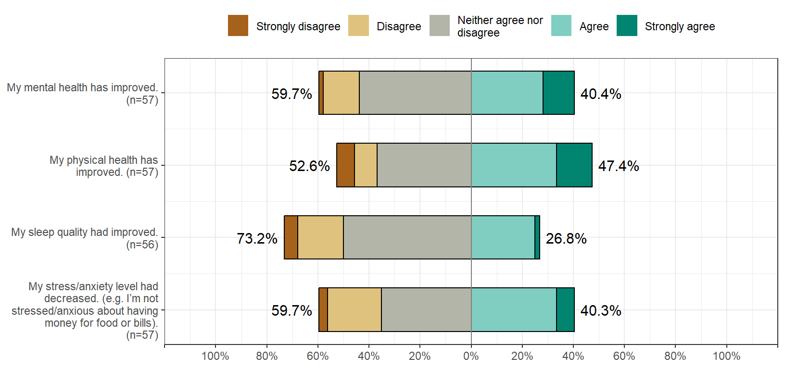
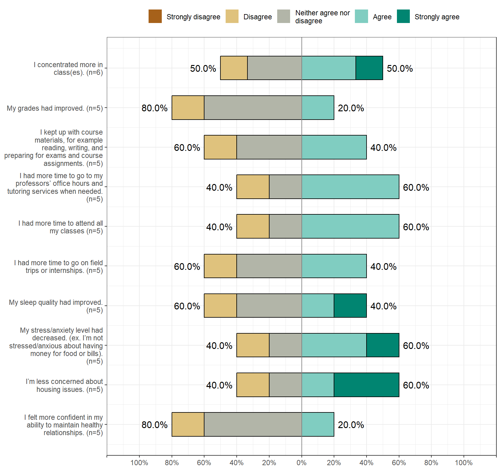

Other Basic Needs
Students were asked to report information relating to their campus food pantry, Medi-Cal, and emergency housing services. Those that have utilized these services were asked to report their perceived impact of these services, while those that were not using them were asked to report any barriers to accessing them.
As a reminder, students had the option to select “Prefer not to answer” for all questions, and these responses were set as missing values. In addition, 11 (6.0%) students did not finish the survey. The n reporting refers to the total number of non-missing responses, while the percent reporting reflects the percent of non-missing responses.
Basic Needs
Survey Question: Please mark all the statements that apply to you.
Summary: A total of 42 (25.0%) students reported currently using their campus food pantry or have used it in the past as a college student compared to 57 (34.8%) students for Medi-Cal and only 6 (3.6%) for emergency housing services.
Food Pantry Usage

Survey Question: Indicated in x-axis Labels
Additional Notes: Only students who reported that they Currently use the campus food pantry as a student, or Used it in the past as a college student saw this question (See Basic Needs section).
Summary: Of those who reported currently using their campus food pantry or have used it in the past as a college student, 16 (39.0%) students reported using it less than once a week, 18 (43.9%) reported using it about once a week, and 5 (12.2%) reported using it more than once a week.
Food Pantry - Impact
Because I utilized campus food pantries:


Survey Question: For the following questions, please choose how much you agree or disagree with the impact campus food pantries has or had on your life. Because I utilized campus food pantries:
Additional Notes: Only students who reported that they Currently use the campus food pantry as a student, or Used it in the past as a college student saw this question (See Basic Needs section).
Summary: Some highlights of the results include the following: Because students utilized their campus food pantries, 25 (71.4%) were neutral, disagreed, or strongly disagreed that they worked fewer hours in a paid position each week; and 29 (76.3%) were neutral, disagreed, or strongly disagreed that they shopped more frequently at the farmers’ market. Meanwhile, 31 (79.5%) students agreed or strongly agreed that they cooked more frequently at home; and 29 (76.3%) agreed or strongly agreed that they did not worry about food running out each month because of the food pantry.
Food Pantry - Barriers
| Reasons for Not Using Campus Food Pantries: | Yes (%) |
|---|---|
| I don't need to use campus food pantries. (n = 122) | 44 (36.1%) |
| I feel other students need the food more than I do. (n = 122) | 43 (35.2%) |
| I am not aware of any campus food pantries or local food banks. (n = 122) | 27 (22.1%) |
| I am embarrassed or scared to go to the campus food pantries or local food banks. (n = 122) | 17 (13.9%) |
| Inconvenient times of operation/limited pantry hours. (n = 122) | 16 (13.1%) |
| I feel uncomfortable about receiving help with basic needs, like food. (n = 122) | 14 (11.5%) |
| Inconvenient to access due to lack of transportation or out-of-the way location. (n = 122) | 9 (7.4%) |
| Other (n = 122) | 5 (4.1%) |
| My family doesn't want me to go to campus food pantries or local food banks. (n = 122) | 3 (2.5%) |
| There are no food pantries close to campus or my residence. (n = 122) | 3 (2.5%) |
| I don't want my friends to find out I go to campus food pantries or local food banks. (n = 122) | 2 (1.6%) |
| My friends and peers would think less of me if I went to food pantries or local food banks. (n = 122) | 2 (1.6%) |
| I do not believe in using campus food pantries or local food banks. (n = 122) | 1 (0.8%) |
| I would think less of myself If I went to campus food pantries or local food banks. (n = 122) | 1 (0.8%) |
Survey Question: What are the reasons you do not go to campus food pantries? (Select all that apply)
Additional Notes: Only students who reported that they Never heard of the campus food pantry; Heard of it, but never used it; or Used it before attending college saw this question (See Basic Needs section).
Summary: The most common reason students reported for not using their campus food pantry was because they did not need to use the food pantry, where 44 (36.1%) students selected this option. Meanwhile, 43 (35.2%) students felt that other students need the food more than them, and 27 (22.1%) reported they were not aware of any campus food pantries or local food banks. Please note, some campuses may not have food pantries on or near their campus.
Medi-Cal - Impact
Knowing that I have Medi-Cal:

Survey Question: For the following questions, please choose how much you agree or disagree with the impact Medi-Cal has or had on your life. Knowing that I have Medi-Cal:
Additional Notes: Only students who reported that they Currently use Medi-Cal as a student, or Used it in the past as a college student saw this question (See Basic Needs).
Summary: Because students used Medi-Cal, 34 (59.6%) were neutral, disagreed, or strongly disagreed that their mental health has improved; 27 (47.4%) agreed or strongly agreed that their physical health had improved; 41 (73.2%) were neutral, disagreed, or strongly disagreed that their sleep quality had improved; and 34 (59.6%) were neutral, disagreed, or strongly disagreed that their stress/anxiety level had decreased.
Medi-Cal - Barriers
| Reasons for Not Using Medi-Cal: | Yes (%) |
|---|---|
| I don’t need Medi-Cal. (n = 101) | 48 (47.5%) |
| I do not know what Medi-Cal is or I think I already have health insurance. (n = 101) | 35 (34.7%) |
| I only need medical services at the student health center associated with my campus. (n = 101) | 12 (11.9%) |
| I do not think I am eligible for Medi-Cal. (n = 101) | 9 (8.9%) |
| Other (n = 101) | 7 (6.9%) |
| My family or household does not want me to apply for Medi-Cal. (n = 101) | 2 (2.0%) |
| I feel uncomfortable about receiving help with basic needs, like medical care. (n = 101) | 2 (2.0%) |
| No time to complete the Medi-Cal application/Medi-Cal application is too long. (n = 101) | 1 (1.0%) |
| The Medi-Cal application is too difficult to complete. (n = 101) | 1 (1.0%) |
| I am embarrassed or ashamed to apply for Medi-Cal. (n = 101) | 1 (1.0%) |
| I have heard from other students that it is not worth my time because I won't be eligible. (n = 101) | 0 (0.0%) |
| I don’t believe in social services like Medi-Cal, CalFresh, WIC, or Welfare/Cash Aid. (n = 101) | 0 (0.0%) |
| I would think less of myself If I applied for Medi-Cal. (n = 101) | 0 (0.0%) |
| I don't want my friends to find out I applied for Medi-Cal. (n = 101) | 0 (0.0%) |
| My friends and peers would think less of me if I applied to Medi-Cal. (n = 101) | 0 (0.0%) |
Survey Question: What are the reasons you do not have Medi-Cal or have never used Medi-Cal? (Select all that apply).
Additional Notes: Only students who reported that they Never heard of Medi-Cal; Heard of it, but never used it; or Used it before attending college saw this question (See Basic Needs section).
Summary: A total of 35 (34.7%) students did not use Medi-Cal because they did not know what Medi-Cal was or they already had another health insurance. Meanwhile, 48 (47.5%) reported not needing Medi-Cal, and 9 (8.9%) did not think they were eligible.
Emergency Housing Services - Impact
Because I received Emergency Housing Services:

Survey Question: For the following questions, please choose how much you agree or disagree with the impact Emergency Housing Services have or had on your life. Because I received Emergency Housing Services:
Additional Notes: Only students who reported that they Currently use Emergency Housing Services as a student, or Used it in the past as a college student saw this question (See Basic Needs section).
Summary: Some highlights of the results include the following: Because students utilized emergency housing services, 3 (50.0%) agreed or strongly agreed that they concentrated more in class; 3 (60.0%) agreed or strongly agreed that their stress/anxiety had decreased; and 3 (60.0%) agreed or strongly agreed that they were less concerned about housing issues.
Emergency Housing Services - Barriers
| Reasons for Not Using Emergency Housing Services: | Yes (%) |
|---|---|
| I don’t need Emergency Housing Services (n = 155) | 119 (76.8%) |
| I was not aware that my campus had Emergency Housing Services like grants and housing placements in an emergency. (n = 155) | 38 (24.5%) |
| No time to complete the Emergency Housing application or contact the Emergency Housing Staff. (n = 155) | 4 (2.6%) |
| I am embarrassed or ashamed to apply for Emergency Housing Services. (n = 155) | 4 (2.6%) |
| The Emergency Housing Services application is too difficult to complete. (n = 155) | 3 (1.9%) |
| I would think less of myself if I applied for Emergency Housing Services. (n = 155) | 3 (1.9%) |
| The emergency housing grant/money is not enough to support what I need, so not worth my time to apply for it. (n = 155) | 2 (1.3%) |
| I feel uncomfortable about receiving help with basic needs, like housing. (n = 155) | 2 (1.3%) |
| I don't want my friends to find out that I applied for emergency housing services. (n = 155) | 2 (1.3%) |
| Other (n = 155) | 1 (0.6%) |
| I do not believe in social services like Emergency Housing Services, Medi-Cal, CalFresh, or Welfare/Cash Aid. (n = 155) | 0 (0.0%) |
| My friends and peers would think less of me if I applied for emergency housing services. (n = 155) | 0 (0.0%) |
Survey Question: What are the reasons you do not use Emergency Housing Services or have never used Emergency Housing Services? (Select all that apply)
Additional Notes: Only students who reported that they Never heard of Emergency Housing Services; Heard of it, but never used it; or Used it before attending college saw this question (See Basic Needs section).
Summary: A total of 119 (76.8%) students did not use Emergency Housing Services because they reported not needing them, while 38 (24.5%) did not know that their campus offered emergency housing services. Please note, some campuses may not offer emergency housing services.